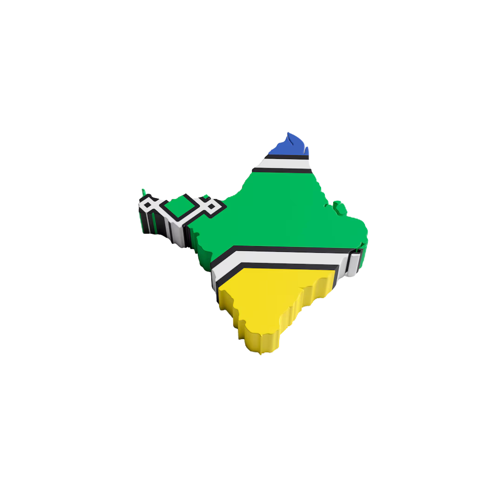

A economia do Amapá é predominantemente baseada no setor de serviços, que representa aproximadamente 85,8% do PIB do estado, seguido pela indústria (9,9%) e pela agropecuária (4,3%).
Extrativismo: Produção de açaí, castanha-do-brasil, guaraná, e extração de madeira.
Agricultura: Cultivo de frutas tropicais, mandioca, arroz e feijão.
Pesca: Atividade pesqueira com destaque para pirarucu, tucunaré e piranha.
Quantidade de Produção:
Produção de 43 mil toneladas de açaí (2021), com meta de aumentar para 43.680 toneladas por safra.
Castanha-do-pará: O Amapá é um dos maiores produtores do Brasil.
Pecuária: 114.773 cabeças de gado bovino, 30.055 suínos, 214.271 bubalinos, e 47.348 aves.
Pesca artesanal com destaque para pirarucu, tucunaré e gurijuba.
Mineração: Produção de manganês (Serra do Navio) e ouro (Calçoene).
Agricultura: Soja, arroz, feijão, milho, abacaxi, banana e mandioca.
Infraestrutura agrícola: Cerca de 8.500 propriedades agropecuárias em 1,5 milhão de hectares.
Agropecuária: Pecuária de corte, arroz, mandioca, açaí.
Extrativismo: Madeira, manganês.
Pesca: Pesca artesanal de rios e camarões.
Quantidade de Produção:
Açaí: Grande produção com destaque para Calçoene e Oiapoque, com meta de atingir 43.680 toneladas por safra.
Pesca: Piraruçu, tucunaré, gurijuba.
Mineração: Manganês e ouro.
Agropecuária: Pecuária de corte, arroz, feijão, açaí.
Pesca: Pesca artesanal com destaque para tucunaré e camarões.
Extrativismo: Madeira, mineração.
Turismo: Potencial para ecoturismo.
Quantidade de Produção:
Pecuária: 114.773 cabeças de gado bovino, 30.055 suínos, 214.271 bubalinos, 47.348 aves.
Agricultura:
Mandioca: Produção em 12.800 hectares.
Milho: Plantio em 2.600 hectares.
Feijão: Produção de 1.102 toneladas em 1.450 hectares.
Arroz: Produção anual de 2.140 toneladas em 2.500 hectares.
Soja: Crescimento na produção mecanizada.
Pesca Artesanal: A pesca é crucial para as populações ribeirinhas que dependem dela para subsistência.
Extrativismo Vegetal: Baseado em modelos socioambientais sustentáveis, destacando-se a produção de açaí, palmito, castanha-do-brasil e madeira.
Agronegócio e Pecuária: Atividades de agricultura e criação de búfalos são essenciais em municípios como Cutias do Araguari.
Desenvolvimento da Indústria Pesqueira: Foco em tornar a costa amapaense um polo pesqueiro, com destaque para o município de Calçoene.
Quantidade de Produção:
Castanha-do-pará: Grande parte da produção nacional vem dessa região.
Açaí: Produção significativa, com foco nas comunidades indígenas e nos sistemas tradicionais de cultivo.
Murumuru: Extração do óleo de murumuru para a indústria cosmética.
Açaí: A produção de 43 mil toneladas em 2021 pode gerar em torno de R$ 1,5 bilhões.
Pesca: Gera cerca de R$ 300 milhões ao ano.
Castanha-do-pará: Pode gerar em torno de R$ 500 milhões ao ano.
Mineração: Pode gerar até R$ 2 bilhões ao ano.
Açaí: Cerca de R$ 100 milhões anuais.
Pesca: Pode gerar R$ 50 milhões por ano.
Mineração: Pode gerar até R$ 1,5 bilhões em exportações anuais.
Pecuária: Pode gerar em torno de R$ 4 bilhões anuais.
Agricultura: Pode gerar cerca de R$ 3 bilhões ao ano.
Castanha-do-pará: Pode gerar cerca de R$ 300 milhões por ano.
Castanha-do-pará: Pode gerar cerca de R$ 200 milhões anualmente.
Açaí: Pode gerar aproximadamente R$ 100 milhões anuais.
Murumuru: Pode gerar em torno de R$ 50 milhões ao ano.
Total Estimado de Receita Anual por Região (aproximado):
Região Norte: ~R$ 4,3 bilhões
Região Oeste: ~R$ 2,65 bilhões
Região Sul: ~R$ 7,3 bilhões
Região Leste: ~R$ 350 milhões
Açaí: São Paulo, Rio de Janeiro, EUA, Europa.
Pesca: Norte e Nordeste do Brasil, Portugal, EUA.
Castanha-do-pará: Indústrias alimentícias, EUA, Europa.
Mineração: Brasil, China, Suíça.
Açaí: São Paulo, Rio de Janeiro, EUA, Europa.
Pesca: Brasil, EUA, Portugal.
Mineração: Brasil, China, Suíça.
Pecuária: Brasil, China, União Europeia.
Agricultura: Brasil, China, Japão, Coreia do Sul.
Castanha-do-pará: Indústrias alimentícias, EUA, Europa.
Açaí: Brasil, EUA, Europa.
Castanha-do-pará: Indústrias alimentícias, EUA, Europa.
Murumuru: Indústrias cosméticas (Brasil, EUA, Europa).
Infraestrutura: Limita o acesso a mercados e aumenta os custos.
Sustentabilidade: Equilibrar desenvolvimento econômico com preservação ambiental.
Acesso a Mercado: Dificuldade de acesso ao mercado formal para pequenos produtores.
Ecoturismo: Potencial promissor aproveitando biodiversidade e cultura rica.
Sustentabilidade: O Amapá pode ser exemplo de desenvolvimento sustentável.
Desenvolvimento da Indústria Pesqueira: Políticas públicas podem agregar valor ao produto.
O Amapá é um estado com grande potencial de crescimento, especialmente em áreas como a produção de açaí, pesca e mineração. Contudo, enfrenta desafios relacionados à infraestrutura e à sustentabilidade. Com o suporte adequado a políticas públicas e investimentos em sustentabilidade, o Amapá pode consolidar sua posição como um dos principais estados da Amazônia em termos de desenvolvimento econômico sustentável.